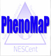
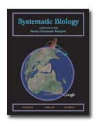
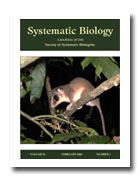

Society of Systematic Biologists
Home of Systematic Biology
Popular contentSyndicateCategories
User loginNavigationWho's onlineThere are currently 0 users and 2 guests online.
|
Director - Atlas of Living Australia
Preliminary announcement: Anticipated Research Zoologist positionResearch Zoologist The Smithsonian√¢‚?¨‚?¢s National Museum of Natural History anticipates being able to recruit for an outstanding systematic zoologist to conduct an integrative, collections-based research program in vertebrate systematics in the specialty areas of herpetology, ichthyology, mammalogy and/or ornithology. The successful candidate will be expected to implement current methods in research, e.g., phylogenetics, morphology, molecular genetics, studies of anatomy, fine structure and/or developmental biology, in pursuing a research focus in systematics and one or more of the following: evolution, biogeography, biodiversity or conservation. Frequent publication in peer-reviewed journals and curation of collections, including collection-building, in specialty area will be expected, as well as demonstrated ability of participation in the scientific community in a manner commensurate with emerging leadership in the area of specialty. Scientific Data CuratorWe are seeking a scientist to help compile comparative morphological data from the scientific literature on fishes. This person will lead data curation and ontology development as part of a team comprised of scientists and software developers, in order to develop a novel system for the analysis of developmental and phenotypic diversity data using ontologies. This NSF funded project (3 years) is led by Paula Mabee (University of South Dakota) in collaboration with Monte Westerfield (Zebrafish Information Network), the National Evolutionary Synthesis Center and the National Center for Biomedical Ontology. Position Announcement √¢‚?¨" AIBS Public Affairs RepresentativeThe American Institute of Biological Sciences (AIBS) anticipates hiring (contingent upon the expected receipt of federal grant funds) a PhD-trained scientist with experience working at the interface of science, communications, and public policy to serve as a Public Affairs Representative (PAR). The PAR will be a full-time AIBS employee, reporting to the Director of Public Policy. The PAR will serve as a liaison between the National Ecological Observatory Network (NEON) Board, staff and stakeholders, and the broader science community and public. SSB election results are in!To those members who voted, thank you for your participation. As always, a big thank you to all of those willing to serve in the administration of the society. President-elect: John Huelsenbeck The constitutional changes have been passed. (The voting link was posted at the top of this website. If you did not also receive an email notification before the election regarding casting your vote, please notify Heide Rohland at hrohland@burkinc.com in case your membership information is out of date.) Online data for February and April now available. Joe Felsenstein interview (with advice to young scientists)
Blind.Scientist: You have in Phylip√¢‚?¨‚?¢s grant webpage a √¢‚?¨≈?no thanks√¢‚?¨¬ù section listing everyone that refused supporting the program along the years. In my opinion this is a bold statement and not very common in the scientific environment (at least not online). What would be your advice for the young scientist that is searching for financial support for his/her research? Should s/he be vocal when a strong application is rejected? JF: Generally, no. I could do this because I felt confident enough in my reputation. It was fun. These granting agencies can say all sorts of fatuous things in their evaluations and they are never called on this. A web page is editor-free publication so I had fun with that. I had a hope that it might cause grant reviewers to think twice about getting themselves on that list by coming up with arbitrary and ill-thought-out objections. (Based on our lab√¢‚?¨‚?¢s experience since then, alas, this isn√¢‚?¨‚?¢t working). But for a vulnerable young researcher I would say no, don√¢‚?¨‚?¢t succumb to that temptation. You may get a reputation as a sorehead. I know a few young scientists who are quite combative about any negative evaluation, and they do get a reputation as someone you don√¢‚?¨‚?¢t want to deal with. However in these days of increasing difficulty in finding funds, it is tough for newcomers as the agencies are looking for any reason to say no. New bumble bee phylogeny
Paul Williams (one of the coauthors) maintains a comprehensve web site on bumble bees at The Natural History Museum, from which the image of Bombus trifasciatus at the right is taken. Four Australian Postdoctoral Fellowships in Taxonomy
The 3-year Postdoctoral Fellowships are focused on the taxonomy of aquatic macroinvertebrates, environmental weeds, ants and small terrestrial vertebrates. For more information, please go to this website: http://recruitment.csiro.au/asp/job_details.asp?RefNo=2007%2F313. Google Earth files for avian flu virus
The Google Earth file that accompanies the paper "Genomic Analysis and Geographic Visualization of the Spread of Avian Influenza (H5N1)" (Janies et al., doi:10.1080/10635150701266848, or OpenURL) is available here (aiTrees.kmz). The paper has received some media coverage. Click on the image (or here) to see a news item from CBS Denver. |
Latest issue
EVOLDIRphylobabble.orgiPhyloPhyloseminarSystematics AssociationNESCentThe Genealogical World of Phylogenetic NetworksCiteULike PhylogenyEvolutionary Bioinformatics
CladisticsBMC Evolutionary Biology
Molecular Biology and Evolution |
 Follow us on Twitter
Follow us on Twitter Find us on Facebook
Find us on Facebook
 Sydney Cameron and coauthors have published a phylogeny of the genus Bombus (bumble bees). The paper is available here
Sydney Cameron and coauthors have published a phylogeny of the genus Bombus (bumble bees). The paper is available here